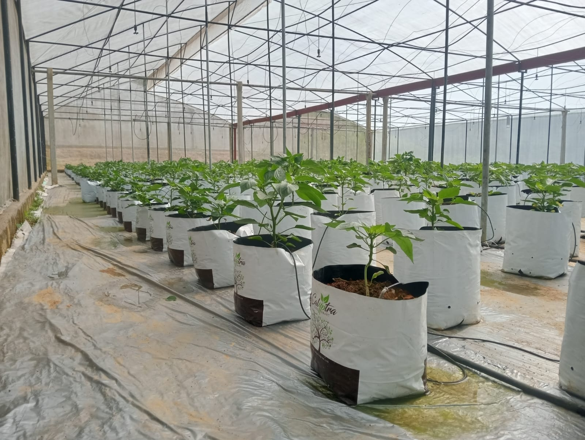

HOMEAGRICULTUREMany ways
Many ways
to grow.
Beyond our tea estates, discover another side of Farmax’s agricultural roots.

ANOTHER SIDE OF FARMAX03 / BEYOND THE TEA FIELDSMany ways to grow.
Many ways to grow.
One shared purpose.
Our agricultural roots extend into greenhouse-grown bell peppers. Alongside our tea estates, this is another expression of our commitment to growing with care.
Interested in our produce or agricultural business? Our team would love to hear from you.
Talk agriculture with us ↗A fresh conversation.
A new possibility.
For produce availability, prices, wholesale enquiries, and agricultural business discussions, contact our team for current details.
Enquire about produce ↗Let’s grow something good.↗